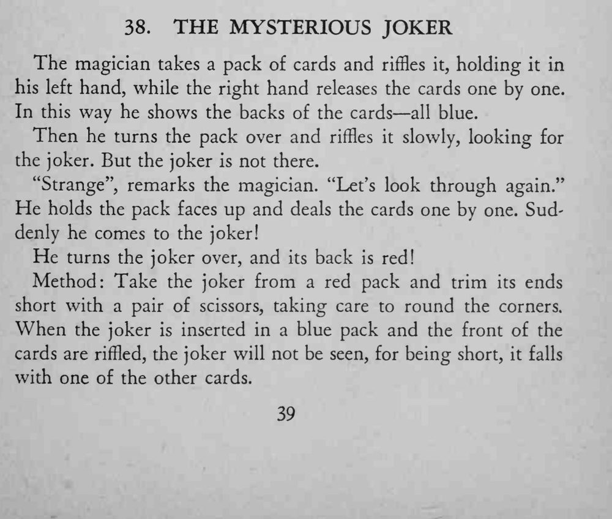
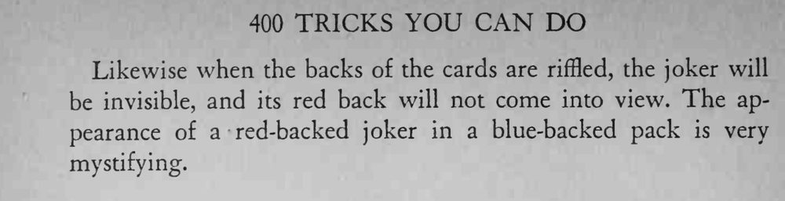

魔术师弹牌展示整副牌都是蓝背，翻过来找小丑却找不到；再一张张翻看牌面时，突然冒出一张红背的小丑。
小丑要剪得略短一点、修圆角，弹牌时才跟得住其他牌。


The magician takes a pack of cards and riffles it, holding it in his left hand, while the right hand releases the cards one by one. In this way he shows the backs of the cards all blue. Then he turns the pack over and riffles it slowly, looking for the joker. But the joker is not there. "Strange", remarks the magician. "Let's look through again." He holds the pack faces up and deals the cards one by one. Suddenly he comes to the joker! He turns the joker over, and its back is red! Method: Take the joker from a red pack and trim its ends short with a pair of scissors, taking care to round the corners. When the joker is inserted in a blue pack and the front of the cards are riffled, the joker will not be seen, for being short, it falls with one of the other cards. Likewise when the backs of the cards are riffled, the joker will be invisible, and its red back will not come into view. The appearance of a red-backed joker in a blue-backed pack is very mystifying.